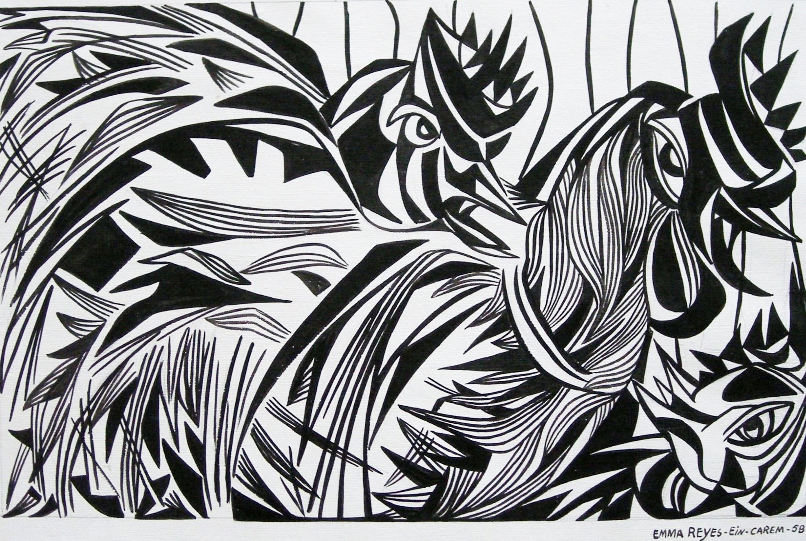

Emma Reyes
1919 – 2003
Artist Biography
Emma Reyes was a Colombian painter and intellectual who overcame a poverty-stricken and difficult background, escaping a convent for orphan girls aged nineteen. Despite being illiterate and untrained artistically, she in 1947 won an art scholarship to Paris. Reyes gradually broke through as an artist and forged friendships with some of the most distinguished European and Latin American artist, writers and academics of the twentieth century including Frida Kahlo, Diego Rivera and Jean-Paul Sartre. Her first solo show was at Galerie Kleber in Paris in 1949 and in the early 1950s her work was shown in Mexico City alongside that of Diego Rivera and Jose Clemente Orosco. She lived in Buenos Aires, Montevideo, Jerusalem, Washington and Rome before settling in Paris. In the year of her death the French government named her a Knight of the Order of Arts and Letters. In 2012 a volume of letters detailing her childhood was published, initially in Spanish, becoming a slow-burn literary sensation. A solo show of her artwork was held in Perigord Museum, France in 2017/2018 and White Cube in London also presented a solo exhibition in 2026. Note: Leon Tovar Gallery showing a major floral work on paper at TEFAF New York in 2025, which was shown as a full-page image in The Art Newspaper May 2025. Apolllo described Reyes as an artist whose ‘star is in the ascendant’.

Untitled, 1958